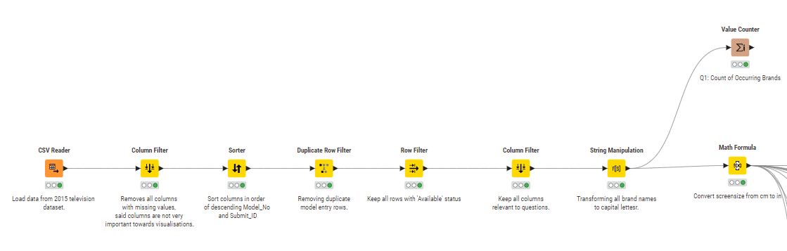

About Us
This site is done as demonstration assignment spanning across Week 2 to Week 4 for COS30045.
KNIME Display

Questions to Answer
1. What type of TV screen technologies are currently available in Australia and which are the most frequent?
The Screen_Tech column and the SoldIn column will both provide information on which brand of televisions are available, and counting the amount of rows for frequency will show which Screen_Tech value pops up the most. For currently available, it will just be to check which brands have the Available tag in the Availability column.
2. What screen sizes are available and which are most frequent?
The column Screensize is usable for determining available screen sizes, since it provides a diagonal measurement, and frequency can be calculated the same way.
3. Which brands have the largest number of models?
The Brand_Reg column as the class and the Model_No column as the count.
4. Which type of screen technology consumes the least amount of power?
Sort the Screen_Tech column in ascending order according to the Labelled energy consumption.
5. What is the relationship between screen size and power use?
Will require both Screen_size and labelled energy consumption.
6. What is the relationship between star rating and screen size?
Will require Star2 and Screensize.
7. Are there differences in power consumption between brands?
Will require Brand_Reg and Labelled energy consumption.
8. Any other questions you can think of that could be investigated with this data set?
Maybe questions such as which products require a webpage for better accessibility and documentation, as some products do not have websites according to Product Website. Country for manufacturer origin could be good to view where most televisions are exported from.